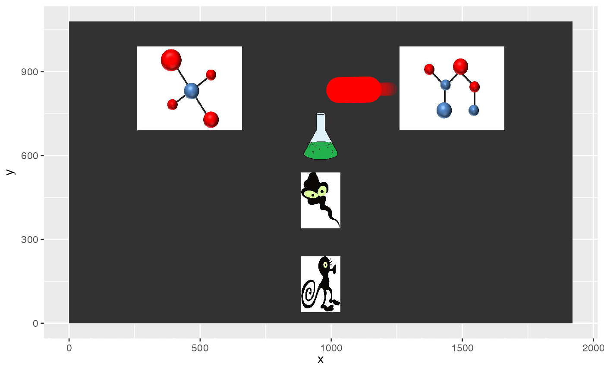

Animating eyetools data
Matthew Ivory, Tom Beesley
Animating-eyetools-data.Rmd
library(eyetools)
library(gganimate)
#> Warning: package 'gganimate' was built under R version 4.2.3
#> Loading required package: ggplot2
#> Warning: package 'ggplot2' was built under R version 4.2.3
library(tidyverse)
#> ── Attaching packages ─────────────────────────────────────── tidyverse
#> 1.3.2 ──
#> ✔ tibble 3.2.1 ✔ dplyr 1.1.2
#> ✔ tidyr 1.3.0 ✔ stringr 1.5.0
#> ✔ readr 2.1.3 ✔ forcats 0.5.2
#> ✔ purrr 1.0.2
#> ── Conflicts ────────────────────────────────────────── tidyverse_conflicts() ──
#> ✖ dplyr::filter() masks stats::filter()
#> ✖ dplyr::lag() masks stats::lag()In this article, we offer examples of how eyetools data can be used with the gganimate package.
Plotting raw data with lag
This animation takes raw data (of a single trial), transforms it into a larger dataset with plot-specific parameters, and then provides an animation of the participant’s gaze. The lag feature highlights the path taken and slowly fades to allow more data to be presented
data <- example_counterbalance[example_counterbalance$trial == 3,] |> # take a random trial
interpolate() |>
smoother() |>
mutate(id = seq(1, n()), # add an ID column to original dataset,
type = "original",
size = 10, # specify initial size
alpha = 1) |> # specify initial alpha
mutate(time = time - min(time))
#bind the original dataset to a mid and end state too
data_2 <- rbind(data,
data |> # create second version of the dataset - this is the tail
mutate(type = "mid_state",
time = time + 45,
size = size * 0.5,
alpha = alpha * 0.2),
data |>
mutate(type = "end_state",
time = time + 300, # this determines the length of the tail and the final state
alpha = 0))
# pass this combined dataset to ggplot & animate
plot_animate <- data_2 |>
ggplot(aes(x = x, y = y, group = id,
size = size, alpha = alpha)) +
# add a background image
annotation_raster(magick::image_read("../data/HCL_sample_image.jpg"),
xmin = 0,
xmax = 1920,
ymin = 0,
ymax = 1080) +
geom_point(colour = "red") +
transition_components(time) +
scale_size_identity() +
scale_alpha_identity() +
lims(x = c(0, 1920), y = c(0, 1080))
animate(plot_animate,
duration = 14)
## To save an animation
#anim_save("point_lag.gif", plot_animate, height = 1080, width = 1920, duration = round(max(data_2$time)/1000),
# end_pause = 5)Plotting AOI entries over raw data
#data <- example_raw_WM |>
# interpolate() |>
# smoother()
#
#AOIs_WM
#
#data_plot <- data |>
# filter(trial == 1) |>
# mutate(in_AOI = case_when(between(x, AOIs_WM$x[1], AOIs_WM$x[1] + AOIs_WM$width_radius[1]) ~ TRUE,
# between(x, AOIs_WM$x[2], AOIs_WM$x[2] + AOIs_WM$width_radius[1]) ~ TRUE,
# between(x, AOIs_WM$x[3], AOIs_WM$x[3] + AOIs_WM$width_radius[1]) ~ TRUE,
# between(x, AOIs_WM$x[4], AOIs_WM$x[4] + AOIs_WM$width_radius[1]) ~ TRUE,
# .default = FALSE)) |>
# mutate(id = seq(1, n()), # add an ID column to original dataset,
# type = "original",
# size = 10, # specify initial size
# alpha = 1) |> # specify initial alpha
# mutate(time = time - min(time))
#
#
#plot_animate <- data_plot |>
# ggplot(aes(x = x, y = y,
# colour = in_AOI
# )) +
# geom_point() +
# ggtitle("{frame_time}")# + # optional; added to illustrate frame time explicitly
# transition_components(time)
#
#animate(plot_animate, duration = round(max(data_plot$time)/100))